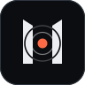

One product,
one look.
HOUND Command is a dark, dense operations console. The 3-D world is the hero; panels are quiet instruments around it. Nothing shouts except a person being found. This page shows every token and every shared component in every state. Build from these and the console stays one product.

Brand
The mark is an H made of two walls and one warm dot between them: a person, found. The rings are the signal passing through the walls. Seen another way it is a hound facing you, two ears and a nose. The dot is always the person colour and it is the only colour in the mark.


Colour means something
Graphite surfaces carry the work. Six hues carry meaning, and each one always travels with a word or an icon so nothing depends on colour alone. No other colours, and no hex codes outside this file's tokens.
--line hairline between rows--line-2 edge of a control--line-3 hovered edge, strong ruleMeaning
Heat ramp --heat-0 … --heat-5
Three voices
A serif that speaks in headlines, a sans that does the work, a monospace for numbers that move. Sentence case everywhere. No all-caps labels, no letter-spaced kickers, no monospace headings. Smallest text is 11 px.
Instrument Serif
Display. Workspace titles, headlines, big static numbers. Always weight 400; use the italic for one word of emphasis.
Instrument Sans
Interface. Everything you read or press. 400 for text, 500 for controls, 600 for panel titles.
Geist Mono
Numbers that change, clocks, coordinates, code. Tabular, so nothing jitters. Never for headings.
Roles
Space, corners, depth, motion
A 4-point grid. Corners are tight: this is equipment, not a consumer app. Depth comes from a 1 px highlight on the top edge and a short shadow, never from glow.
Motion --ease
Buttons
One primary action per view: the thing the operator should do next. Everything else is a plain or ghost button. Stopping and destructive actions are red and confirm first.
Labels
Tags read like the engraved labels on an instrument. A solid square means real or live. A hollow square on a dashed, hatched ground means simulated or concept, so a simulation can never pass for a reading.
Findings
3Confirmed 2Possible 1Routes 12Faults 1Inputs and choices
Inputs are wells cut into the surface. Choices are raised keys. Segments pick one, chips filter many, a switch turns one thing on.
Data
Numbers align on the right in tabular figures. Labels are quiet, values are bright. Every number below is real: it comes from the Wi-Fi network's test on 955 windows of simulated people.
Wi-Fi network on the test set
Simulated people| What was in the room | Right answer | Right | Share |
|---|
- Network
- 1-D CNN, three convolutions
- Input
- 52 × 200
- Threshold
- 0.53
- False alarm, empty room
- 11.1 %
- Tested on real people
- Not yet
Charts
A chart makes one point and its title says what the point is. Axes carry units. Label the series directly where you can; use a legend when you cannot. One hue per meaning, hairline grid, monospace ticks.
The network finds movement, not stillness
Simulated peopleWi-Fi says PERSON, score 0.81
Panels, cards, glass
A panel groups related things under a short title. A card is one raised thing inside it. Glass is only for panels that float over the 3-D view, so the world stays visible behind them.
HOUND-01
Listening- Stop
- 3 of 4
- Battery
- 71 %
- Link
- 88 %
Rescue route
PlannedConcept
Simulated or concept content may sit on the hatch.
.hatch.cropStates a panel must have
Loading
Loading the drone photos…
Empty
No findings yet. Start the mission and HOUND-01 will listen at its first stop.
Error
The earthquake feed did not answer. Check the connection and try again.
Workspace header .ws-head
Alerts and dialogs
Stop every unit?
HOUND-01 and the drone will hold where they are. Nothing is lost; press Resume to carry on.
Icons
One stroke set on a 24 px grid: ctx.kit.icon(name, size). Click one to copy its name. Add to the set in kit.js rather than pasting SVG elsewhere.
Do, and do not
The short version of docs/STYLE.md.
Do
- Say what a rescuer would say: "Person confirmed, room 104", "Approve route".
- Put the reality label where the eye lands first.
- Right-align numbers, give them units, mark assumed values "assumed".
- One primary button per view.
- Show loading, empty and error. Never a blank panel.
Do not
- All-caps labels, letter-spaced kickers, monospace headings.
- A new colour, a gradient for decoration, a glow that means nothing.
- The person colour on anything that is not a person.
- Bold serif. The display face has one weight.
- A number without its source: say "in simulation".